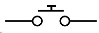
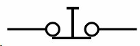
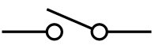

À la fin de ce chapitre, vous serez capable d’utiliser des boutons ou des interrupteurs pour interagir de manière simple avec votre programme.
Sommaire
Qu’est-ce qu’un bouton ?
Derrière ce titre trivial se cache un composant de base très utile, possédant de nombreux détails que vous ignorez peut-être. Commençons donc dès maintenant l’autopsie de ce dernier.
Mécanique du bouton
Vous le savez sûrement déjà, un bouton n’est jamais qu’un fil qui est connecté ou non selon sa position. En pratique, on en repère plusieurs, qui diffèrent selon leur taille, leurs caractéristiques électriques, les positions mécaniques possibles, etc.
Le bouton poussoir normalement ouvert (NO)
Dans cette partie du tutoriel, nous allons utiliser ce type de boutons poussoirs (ou BP). Ces derniers ont deux positions :
- Relâché : le courant ne passe pas, le circuit est déconnecté ; on dit que le circuit est " ouvert ".
- Appuyé : le courant passe, on dit que le circuit est fermé .
Retenez bien ces mots de vocabulaire !
Le bouton poussoir normalement fermé (NF)
Ce type de bouton est l’opposé du type précédent, c’est-à-dire que lorsque le bouton est relâché, il laisse passer le courant. Et inversement :
- Relâché : le courant passe, le circuit est connecté ; on dit que le circuit est " fermé ".
- Appuyé : le courant ne passe pas, on dit que le circuit est ouvert .
Les interrupteurs
À la différence d’un bouton poussoir, l’interrupteur agit comme une bascule.
Un appui ferme le circuit et il faut un second appui pour l’ouvrir de nouveau.
Il possède donc des états stables (ouvert ou fermé).
On dit qu’un interrupteur est
bistable
.
Vous en rencontrez tous les jours lorsque vous allumez la lumière
 .
.
L’électronique du bouton
Symbole
Le BP et l’interrupteur ne possèdent pas le même symbole pour les schémas électroniques. Le premier est représenté par une barre qui doit venir faire contact pour fermer le circuit ou défaire le contact pour ouvrir le circuit. Le second est représenté par un fil qui ouvre un circuit et qui peut bouger pour le fermer. Voici leurs symboles, il est important de s’en rappeler :
|  |  |  |
|---|---|---|
| Bouton Poussoir NO | Bouton Poussoir NF | Interrupteur |
Tension et courant
Voici maintenant quelques petites précisions sur les boutons :
- Lorsqu’il est ouvert, la tension à ses bornes ne peut être nulle (ou alors c’est que le circuit n’est pas alimenté). En revanche, lorsqu’il est fermé cette même tension doit être nulle. En effet, aux bornes d’un fil la tension est de 0V.
-
Ensuite, lorsque le bouton est ouvert, aucun courant ne peut passer, le circuit est donc déconnecté. Par contre, lorsqu’il est fermé, le courant nécessaire au bon fonctionnement des différents composants le traverse. Il est donc important de prendre en compte cet aspect. Un bouton devant supporter deux ampères ne sera pas aussi gros qu’un bouton tolérant 100 ampères (et pas aussi cher
 ).
).
Il est très fréquent de trouver des boutons dans les starters kit.
Souvent ils ont quatre pattes (comme sur l’image ci-dessus). Si c’est le cas, sachez que les broches sont reliées deux à deux. Cela signifie quelles fonctionnent par paire. Il faut donc se méfier lorsque vous le brancher sinon vous obtiendrez le même comportement qu’un fil (si vous connectez deux broches reliées). Utilisez un multimètre pour déterminer quelles broches sont distinctes. Pour ne pas se tromper, on utilise en général deux broches qui sont opposées sur la diagonale du bouton.
Contrainte pour les montages
Voici maintenant un point très important, soyez donc attentif car je vais vous expliquer le rôle d’une résistance de pull-up !
C’est quoi c’t'animal, le poule-eup ?
Lorsque l’on fait de l’électronique, on a toujours peur des perturbations (générées par plein de choses : des lampes à proximité, un téléphone portable, un doigt sur le circuit, l’électricité statique, …). On appelle ça des contraintes de CEM . Ces perturbations sont souvent inoffensives, mais perturbent beaucoup les montages électroniques. Il est alors nécessaire de les prendre en compte lorsque l’on fait de l’électronique de signal. Par exemple, dans certains cas on peut se retrouver avec un bit de signal qui vaut 1 à la place de 0, les données reçues sont donc fausses.
Pour contrer ces effets nuisibles, on place en série avec le bouton une résistance de pull-up. Cette résistance sert à "tirer" ("to pull" in english) le potentiel vers le haut (up) afin d’avoir un signal clair sur la broche étudiée. Sur le schéma suivant, on voit ainsi qu’en temps normal le "signal" a un potentiel de 5V. Ensuite, lorsque l’utilisateur appuiera sur le bouton une connexion sera faite avec la masse. On lira alors une valeur de 0V pour le signal. Voici donc un deuxième intérêt de la résistance de pull-up, éviter le court-circuit qui serait généré à l’appui !
Filtrer les rebonds
Les boutons ne sont pas des systèmes mécaniques parfaits. Du coup, lorsqu’un appui est fait dessus, le signal ne passe pas immédiatement et proprement de 5V à 0V. En l’espace de quelques millisecondes, le signal va "sauter" entre 5V et 0V plusieurs fois avant de se stabiliser. Il se passe le même phénomène lorsque l’utilisateur relâche le bouton.
Ce genre d’effet n’est pas désirable, car il peut engendrer des parasites au sein de votre programme (si vous voulez détecter un appui, les rebonds vont vous en générer une dizaine en quelques millisecondes, ce qui peut-être très gênant dans le cas d’un compteur par exemple). Voilà un exemple de chronogramme relevé lors du relâchement d’un bouton poussoir :
Pour atténuer ce phénomène, nous allons utiliser un condensateur en parallèle avec le bouton. Ce composant servira ici "d’amortisseur" qui absorbera les rebonds (comme sur une voiture avec les cahots de la route). Le condensateur, initialement chargé, va se décharger lors de l’appui sur le bouton. S’il y a des rebonds, ils seront encaissés par le condensateur durant cette décharge. Il se passera le phénomène inverse (charge du condensateur) lors du relâchement du bouton. Ce principe est illustré à la figure suivante :
Schéma résumé
En résumé, voilà un montage que vous pourriez obtenir avec un bouton, sa résistance de pull-up et son filtre anti-rebond sur votre carte Arduino :
Les pull-ups internes
Comme expliqué précédemment, pour obtenir des signaux clairs et éviter les courts-circuits, on utilise des résistances de pull-up. Cependant, ces dernières existent aussi en interne du microcontrôleur de l’Arduino, ce qui évite d’avoir à les rajouter par nous-mêmes par la suite. Ces dernières ont une valeur de 20 kilo-Ohms. Elles peuvent être utilisées sans aucune contrainte technique.
Cependant, si vous les mettez en marche, il faut se souvenir que cela équivaut à mettre la broche à l’état haut (et en entrée évidemment). Donc si vous repassez à un état de sortie ensuite, rappelez-vous bien que tant que vous ne l’avez pas changée elle sera à l’état haut. Ce que je viens de dire permet de mettre en place ces dernières dans le logiciel :
const int unBouton = 2; // un bouton sur la broche 2
void setup()
{
// on met le bouton en entrée
pinMode(unBouton, INPUT);
// on active la résistance de pull-up en mettant la broche à l'état haut
// (mais cela reste toujours une entrée)
digitalWrite(unBouton, HIGH);
}
void loop()
{
// votre programme
}
Depuis la version 1.0.1 d’Arduino, une pull-up peut être simplement mise en oeuvre en utilisant le deuxième argument de
pinMode
. La syntaxe devient
pinMode(unBouton, INPUT_PULLUP)
et il n’y a plus besoin de faire un
digitalWrite()
ensuite.
Schéma résumé
Récupérer l’appui du bouton
Montage de base
Pour cette partie, nous allons apprendre à lire l’état d’une entrée numérique.
Tout d’abord, il faut savoir qu’une entrée numérique ne peut prendre que deux états, HAUT (
HIGH
) ou BAS (
LOW
).
L’état haut correspond à une tension de +5V sur la broche, tandis que l’état bas est une tension de 0V.
Dans notre exemple, nous allons utiliser un simple bouton.
Dans la réalité, vous pourriez utiliser n’importe quel capteur qui possède une sortie numérique. Nous allons donc utiliser :
- Un bouton poussoir (et une résistance de 10k de pull-up et un condensateur anti-rebond de 10nF)
- Une LED (et sa résistance de limitation de courant)
- La carte Arduino
Voici maintenant le schéma à réaliser :
Paramétrer la carte
Afin de pouvoir utiliser le bouton, il faut spécifier à Arduino qu’il y a un bouton de connecté sur une de ses broches.
Cette broche sera donc une
entrée
.
Bien entendu, comme vous êtes de bons élèves, vous vous souvenez que tous les paramétrages initiaux se font dans la fonction
setup()
.
Vous vous souvenez également que pour définir le type (entrée ou sortie) d’une broche, on utilise la fonction :
pinMode()
.
Notre bouton étant branché sur la pin 2, on écrira :
pinMode(2, INPUT);
Pour plus de clarté dans les futurs codes, on considérera que l’on a déclaré une variable globale nommée "bouton" et ayant la valeur 2 .
Comme ceci :
const int bouton = 2;
void setup()
{
pinMode(bouton, INPUT);
}
Voilà, maintenant notre carte Arduino sait qu’il y a quelque chose de connecté sur sa broche 2 et que cette broche est configurée en entrée.
Récupérer l’état du bouton
Maintenant que le bouton est paramétré, nous allons chercher à savoir quel est son état (appuyé ou relâché).
- S’il est relâché, la tension à ses bornes sera de +5V, donc un état logique HIGH.
- S’il est appuyé, elle sera de 0V, donc LOW.
Un petit tour sur la référence et nous apprenons qu’il faut utiliser la fonction
digitalRead()
pour lire l’état logique d’une entrée logique.
Cette fonction prend un paramètre qui est la broche à tester et elle retourne une variable de type
int
.
Pour lire l’état de la broche 2 nous ferons donc :
int etat;
void loop()
{
etat = digitalRead(bouton); // Rappel : bouton = 2
if(etat == HIGH)
actionRelache(); // le bouton est relaché
else
actionAppui(); // le bouton est appuyé
}
Observez dans ce code, on appelle deux fonctions qui dépendent de l’état du bouton.
Ces fonctions ne sont pas présentes dans ce code, si vous le testez ainsi, il ne fonctionnera pas. Pour ce faire, vous devrez créer les fonctions
actionAppui()
.
Test simple
Nous allons passer à un petit test, que
vous
allez faire. Moi je regarde !

But
L’objectif de ce test est assez simple : lorsque l’on appuie sur le bouton, la LED doit s’éteindre. Lorsque l’on relâche le bouton, la LED doit s’allumer. Autrement dit, tant que le bouton est éteint , la LED est allumée .
Correction
Allez, c’est vraiment pas dur, en plus je vous donne le montage dans la première partie… Voici la correction :
// le bouton est connecté à la broche 2 de la carte Adruino
const int bouton = 2;
// la LED à la broche 13
const int led = 13;
// variable qui enregistre l'état du bouton
int etatBouton;
void setup()
{
pinMode(led, OUTPUT); // la led est une sortie
pinMode(bouton, INPUT); // le bouton est une entrée
etatBouton = HIGH; // on initialise l'état du bouton comme "relaché"
}
void loop()
{
etatBouton = digitalRead(bouton); // Rappel : bouton = 2
if(etatBouton == HIGH) // test si le bouton a un niveau logique HAUT
{
digitalWrite(led, LOW); //le bouton est relâché, la LED est allumée
}
else // test si le bouton a un niveau logique différent de HAUT (donc BAS)
{
digitalWrite(led, HIGH); //la LED reste éteinte
}
}
Voici une illustration sur simulateur. Le montage est légèrement différent en utilisant une pullup interne à l’Arduino.
J’espère que vous y êtes parvenu sans trop de difficultés ! Si oui, passons à l’exercice suivant…
Interagir avec les LED
Nous allons maintenant faire un exemple d’application ensemble.
Montage à faire
Pour cet exercice, nous allons utiliser deux boutons et quatre LED de n’importe quelles couleurs.
- Les deux boutons seront considérés actifs (appuyés) à l’état bas (0V) comme dans la partie précédente. Ils seront connectés sur les broches 2 et 3 de l’Arduino.
- Ensuite, les quatre LED seront connectées sur les broches 10 à 13 de l’Arduino.
Voilà donc le montage à effectuer :
Objectif : Barregraphe à LED
Dans cet exercice, nous allons faire un mini-barregraphe. Un barregraphe est un afficheur qui indique une quantité, provenant d’une information quelconque (niveau d’eau, puissance sonore, etc.), sous une forme lumineuse. Le plus souvent, on utilise des LED alignées en guise d’affichage. Chaque LED se verra allumée selon un niveau qui sera une fraction du niveau total. Par exemple, si je prends une information qui varie entre 0 et 100, chacune des 4 LED correspondra au quart du maximum de cette variation. Soit . En l’occurrence, l’information entrante c’est l’appui des boutons. Par conséquent un appui sur un bouton allume une LED, un appui sur un autre bouton éteint une LED. En fait ce n’est pas aussi direct, il faut incrémenter ou décrémenter la valeur d’une variable et en fonction de cette valeur, on allume telle quantité de LED.
Cahier des charges
La réalisation prévue devra :
- posséder quatre LED (ou plus pour les plus téméraires)
- posséder deux boutons : un qui incrémentera le nombre de LED allumées, l’autre qui le décrémentera
Vous devrez utiliser une variable qui voit sa valeur augmenter ou diminuer entre 0 et 4 selon l’appui du bouton d’incrémentation ou de décrémentation.
Vous pouvez maintenant vous lancer dans l’aventure.
Ceux qui se sentent encore un peu mal à l’aise avec la programmation peuvent poursuivre la lecture, qui leur expliquera pas à pas comment procéder pour arriver au résultat final.
Correction
Initialisation
Pour commencer, on crée et on initialise toutes les variables dont on a besoin dans notre programme :
/* déclaration des constantes pour les noms des broches ; ceci selon le schéma */
const int btn_minus = 2;
const int btn_plus = 3;
const int led_0 = 10;
const int led_1 = 11;
const int led_2 = 12;
const int led_3 = 13;
/* déclaration des variables utilisées pour le comptage et le décomptage */
// le nombre qui sera incrémenté et décrémenté
int nombre_led = 0;
// lecture de l'état des boutons (un seul à la fois donc une variable suffit)
int etat_bouton;
/* initilisation des broches en entrée/sortie */
void setup()
{
pinMode(btn_plus, INPUT);
pinMode(btn_minus, INPUT);
pinMode(led_0, OUTPUT);
pinMode(led_1, OUTPUT);
pinMode(led_2, OUTPUT);
pinMode(led_3, OUTPUT);
}
void loop()
{
// les instructions de votre programme
}
Détection des différences appuyé/relâché
Afin de détecter un appui sur un bouton, nous devons comparer son état
courant
avec son état
précédent
.
C’est-à-dire qu’avant qu’il soit appuyé ou relâché, on lit son état et on l’inscrit dans une variable. Ensuite, on relit si son état a changé.
Si c’est le cas alors on incrémente la variable
nombre_led
.
Pour faire cela, on va utiliser une variable de plus par bouton :
int memoire_plus = HIGH; // état relâché par défaut
int memoire_minus = HIGH;
Détection du changement d’état
Comme dit précédemment, nous devons détecter le changement de position du bouton, sinon on ne verra rien car tout se passera trop vite. Voilà le programme de la boucle principale :
void loop()
{
// lecture de l'état du bouton d'incrémentation
etat_bouton = digitalRead(btn_plus);
// Si le bouton a un état différent de celui enregistré ET
// que cet état est "appuyé"
if((etat_bouton != memoire_plus) && (etat_bouton == LOW))
{
// on incrémente la variable qui indique
// combien de LED devrons s'allumer
nombre_led++;
}
// on enregistre l'état du bouton pour le tour suivant
memoire_plus = etat_bouton;
// et maintenant pareil pour le bouton qui décrémente
etat_bouton = digitalRead(btn_minus); // lecture de son état
// Si le bouton a un état différent que celui enregistré ET
// que cet état est "appuyé"
if((etat_bouton != memoire_minus) && (etat_bouton == LOW))
{
nombre_led--; // on décrémente la valeur de nombre_led
}
// on enregistre l'état du bouton pour le tour suivant
memoire_minus = etat_bouton;
// on applique des limites au nombre pour ne pas dépasser 4 ou 0
if(nombre_led > 4)
{
nombre_led = 4;
}
if(nombre_led < 0)
{
nombre_led = 0;
}
// appel de la fonction affiche() que l'on aura créée
// on lui passe en paramètre la valeur du nombre de LED à éclairer
affiche(nombre_led);
}
Nous avons terminé de créer le squelette du programme et la détection d’évènements, il ne reste plus qu’à afficher le résultat du nombre !
L’affichage
Pour éviter de se compliquer la vie et d’alourdir le code, on va créer une fonction d’affichage.
Celle dont je viens de vous parler :
affiche(int le_parametre)
.
Cette fonction reçoit un paramètre représentant le nombre à afficher.
À présent, nous devons allumer les LED selon la valeur reçue.
On sait que l’on doit afficher une LED lorsque l’on reçoit le nombre 1, deux LED lorsqu’on reçoit le nombre 2, …
void affiche(int valeur_recue)
{
// on éteint toutes les LED
digitalWrite(led_0, HIGH);
digitalWrite(led_1, HIGH);
digitalWrite(led_2, HIGH);
digitalWrite(led_3, HIGH);
// Puis on les allume une à une
if(valeur_recue >= 1)
{
digitalWrite(led_0, LOW);
}
if(valeur_recue >= 2)
{
digitalWrite(led_1, LOW);
}
if(valeur_recue >= 3)
{
digitalWrite(led_2, LOW);
}
if(valeur_recue >= 4)
{
digitalWrite(led_3, LOW);
}
}
Donc, si la fonction reçoit le nombre 1, on allume la LED 1. Si elle reçoit le nombre 2, elle allume la LED 1 et 2. Si elle reçoit 3, elle allume la LED 1, 2 et 3. Enfin, si elle reçoit 4, alors elle allume toutes les LED. Le code au grand complet :
// déclaration des constantes pour les nom des broches ; selon le schéma
const int btn_minus = 2;
const int btn_plus = 3;
const int led_0 = 10;
const int led_1 = 11;
const int led_2 = 12;
const int led_3 = 13;
// déclaration des variables utilisées pour le comptage et le décomptage
// le nombre qui sera incrémenté et décrémenté
int nombre_led = 0;
// lecture de l'état des boutons (un seul à la fois mais une variable suffit)
int etat_bouton;
int memoire_plus = HIGH; // état relâché par défaut
int memoire_minus = HIGH;
/* initilisation des broches en entrée/sortie */
void setup()
{
pinMode(btn_plus, INPUT);
pinMode(btn_minus, INPUT);
pinMode(led_0, OUTPUT);
pinMode(led_1, OUTPUT);
pinMode(led_2, OUTPUT);
pinMode(led_3, OUTPUT);
}
void loop()
{
// lecture de l'état du bouton d'incrémentation
etat_bouton = digitalRead(btn_plus);
// Si le bouton a un état différent que celui enregistré ET
// que cet état est "appuyé"
if((etat_bouton != memoire_plus) && (etat_bouton == LOW))
{
// on incrémente la variable qui indique
// combien de LED devrons s'allumer
nombre_led++;
}
// on enregistre l'état du bouton pour le tour suivant
memoire_plus = etat_bouton;
// et maintenant pareil pour le bouton qui décrémente
etat_bouton = digitalRead(btn_minus); // lecture de son état
// Si le bouton a un état différent que celui enregistré ET
// que cet état est "appuyé"
if((etat_bouton != memoire_minus) && (etat_bouton == LOW))
{
nombre_led--; // on décrémente la valeur de nombre_led
}
// on enregistre l'état du bouton pour le tour suivant
memoire_minus = etat_bouton;
// on applique des limites au nombre pour ne pas dépasser 4 ou 0
if(nombre_led > 4)
{
nombre_led = 4;
}
if(nombre_led < 0)
{
nombre_led = 0;
}
// appel de la fonction affiche() que l'on aura créée
// on lui passe en paramètre la valeur du nombre de LED à éclairer
affiche(nombre_led);
}
void affiche(int valeur_recue)
{
// on éteint toutes les led
digitalWrite(led_0, HIGH);
digitalWrite(led_1, HIGH);
digitalWrite(led_2, HIGH);
digitalWrite(led_3, HIGH);
// Puis on les allume une à une
if(valeur_recue >= 1)
{
digitalWrite(led_0, LOW);
}
if(valeur_recue >= 2)
{
digitalWrite(led_1, LOW);
}
if(valeur_recue >= 3)
{
digitalWrite(led_2, LOW);
}
if(valeur_recue >= 4)
{
digitalWrite(led_3, LOW);
}
}
Une petite vidéo du résultat que vous devriez obtenir, même si votre code est différent du mien :
Et la démonstration interactive :
Les interruptions matérielles
Voici maintenant un sujet plus délicat (mais pas tant que ça !
 ) qui demande votre attention.
) qui demande votre attention.
Comme vous l’avez remarqué dans la partie précédente, pour récupérer l’état du bouton il faut surveiller régulièrement l’état de ce dernier.
Cependant, si le programme a quelque chose de long à traiter, par exemple s’occuper de l’allumage d’une LED et faire une pause avec
delay()
(bien que l’on puisse utiliser
millis()
), l’appui sur le bouton ne sera pas très réactif et lent à la détente.
Pour certaines applications, cela peut gêner.
Problème : si l’utilisateur appuie et relâche rapidement le bouton, vous pourriez ne pas détecter l’appui (si vous êtes dans un traitement long).
Solution : utiliser le mécanisme d' interruption .
Principe
Dans les parties précédentes de ce chapitre, la lecture d’un changement d’état se faisait en comparant régulièrement l’état du bouton à un moment avec son état précédent. Cette méthode fonctionne bien, mais pose un problème : l’appui ne peut pas être détecté s’il est trop court. Autre situation, si l’utilisateur fait un appui très long, mais que vous êtes déjà dans un traitement très long (calcul de la millième décimale de PI, soyons fous), le temps de réponse à l’appui ne sera pas du tout optimal, l’utilisateur aura une impression de lag (= pas réactif). Pour pallier ce genre de problème, les constructeurs de microcontrôleurs ont mis en place des systèmes qui permettent de détecter des évènements et d’exécuter des fonctions dès la détection de ces derniers. Par exemple, lorsqu’un pilote d’avion de chasse demande au siège de s’éjecter, le siège doit réagir au moment de l’appui, pas une minute plus tard (trop tard).
Qu’est-ce qu’une interruption ?
Une interruption est en fait un déclenchement qui arrête l’exécution du programme pour faire une tâche demandée. Par exemple, imaginons que le programme compte jusqu’à l’infini. Moi, programmeur, je veux que le programme arrête de compter lorsque j’appuie sur un bouton. Or, il s’avère que la fonction qui compte est une boucle for(), dont on ne peut sortir sans avoir atteint l’infini (autrement dit jamais, en théorie). Nous allons donc nous tourner vers les interruptions qui, dès que le bouton sera appuyé, interromprons le programme pour lui dire : " Arrête de compter, c’est l’utilisateur qui le demande ! ".
Pour résumer : une interruption du programme est générée lors d’un événement attendu. Ceci dans le but d’effectuer une tâche, puis de reprendre l’exécution du programme . Arduino propose aussi ce genre de gestion d’évènements. On les retrouvera sur certaines broches, sur des timers, des liaisons de communication, etc.
Mise en place
Nous allons illustrer ce mécanisme avec ce qui nous concerne ici, les boutons. Dans le cas d’une carte Arduino UNO, on trouve deux broches pour gérer des interruptions externes (qui ne sont pas dues au programme lui-même), la 2 et la 3. Pour déclencher une interruption, plusieurs cas de figure sont possibles :
- LOW : Passage à l’état bas de la broche
- FALLING : Détection d’un front descendant (passage de l’état haut à l’état bas)
- RISING : Détection d’un front montant (pareil qu’avant, mais dans l’autre sens)
- CHANGE : Changement d’état de la broche
Autrement dit, s’il y a un changement d’un type énuméré au-dessus, alors le programme sera interrompu pour effectuer une action.
Créer une nouvelle interruption
Comme d’habitude, nous allons commencer par faire des réglages dans la fonction setup(). La fonction importante à utiliser est
attachInterrupt(interrupt, function, mode)
. Elle accepte trois paramètres :
-
interrupt: qui est le numéro de la broche utilisée pour l’interruption (0 pour la broche 2 et 1 pour la broche 3) -
function: qui est le nom de la fonction à appeler lorsque l’interruption est déclenchée -
mode: qui est le type de déclenchement (cf. ci-dessus)
Si l’on veut appeler une fonction nommée
Reagir()
lorsque l’utilisateur appuie sur un bouton branché sur la broche 2 on fera :
attachInterrupt(0, Reagir, FALLING);
Vous remarquerez l’absence des parenthèses après le nom de la fonction "Reagir".
Ensuite, il vous suffit de coder votre fonction
Reagir()
un peu plus loin.
Attention, cette fonction ne peut pas prendre d’argument et ne retournera aucun résultat.
Lorsque quelque chose déclenchera l’interruption, le programme principal sera mis en pause. Ensuite, lorsque l’interruption aura été exécutée et traitée, il reprendra comme si rien ne s’était produit (avec peut-être des variables mises à jour).
Voici l’exercice précédent dans un simulateur, mais cette fois-ci en utilisant les interruptions :
Mise en garde
Si je fais une partie entière sur les interruptions, ce n’est pas que c’est difficile mais c’est surtout pour vous mettre en garde sur certains points.
Tout d’abord,
les interruptions ne sont pas une solution miracle
.
En effet, gardez bien en tête que leur utilisation répond à un besoin
justifié
.
Elles mettent tout votre programme en pause, et une mauvaise programmation (ce qui n’arrivera pas, je vous fais confiance
) peut entraîner une altération de l’état de vos variables.
De plus, les fonctions
delay()
et
millis()
n’auront pas un comportement correct.
En effet, pendant ce temps le programme principal est complètement stoppé, donc les fonctions gérant le temps ne fonctionneront plus, elles seront aussi en pause et laisseront la priorité à la fonction d’interruption.
La fonction
delay()
est donc désactivée et la valeur retournée par
millis()
ne changera pas.
Justifiez donc votre choix avant d’utiliser les interruptions.
Et voilà, vous savez maintenant comment donner de l’interactivité à l’expérience utilisateur. Vous avez pu voir quelques applications, mais nul doute que votre imagination fertile va en apporter de nouvelles !

{kind=link}